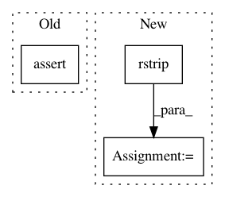

6e0a6ece0ccda7dfe7d989b721f853aa5fedc063,tests/python/pants_test/tasks/jvm_compile/java/test_java_compile_integration.py,JavaCompileIntegrationTest,test_java_compile_reads_resource_mapping,#JavaCompileIntegrationTest#,108
Before Change
for name in files:
path = os.path.join(dirpath, name)
all_files.add(path)
self.assertIn(os.path.join(extract_dir, "compile/jvm/java/classes/deprecation_report.txt"), all_files)
def _whitelist_test(self, target, fatal_flag, whitelist):
// We want to ensure that a project missing dependencies can be
// whitelisted so that the missing deps do not break the build.
After Change
report_file_name = os.path.join(extract_dir, "compile/jvm/java/classes/deprecation_report.txt")
self.assertIn(report_file_name, all_files)
annotated_classes = [line.rstrip() for line in file(report_file_name).read().splitlines()]
self.assertEquals(
{"com.pants.testproject.annotation.main.Main", "com.pants.testproject.annotation.main.Main$TestInnerClass"},
set(annotated_classes))
In pattern: SUPERPATTERN
Frequency: 3
Non-data size: 3
Instances
Project Name: pantsbuild/pants
Commit Name: 6e0a6ece0ccda7dfe7d989b721f853aa5fedc063
Time: 2014-12-15
Author: wangpeiyu@gmail.com
File Name: tests/python/pants_test/tasks/jvm_compile/java/test_java_compile_integration.py
Class Name: JavaCompileIntegrationTest
Method Name: test_java_compile_reads_resource_mapping
Project Name: mynlp/ccg2lambda
Commit Name: 66a06524eba0b22d14204baeb2ca6d4c9db7d1d0
Time: 2017-05-12
Author: pascual@nii.ac.jp
File Name: scripts/semantic_types.py
Class Name:
Method Name: convert_coq_to_nltk_type
Project Name: calico/basenji
Commit Name: 655f60546e0677648f873d204d43b2a1dacf2fa3
Time: 2019-03-27
Author: drk@calicolabs.com
File Name: bin/tfr_bw.py
Class Name:
Method Name: main